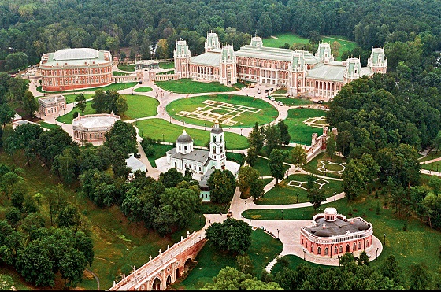

Парк Царицино
Мое желание посетить этот парк появилось с кружочка Даши с белочкой. Я в целом люблю спокойные парки, в которых не очень много людей. И почему-то он показался мне именно таким. Мы уже 2 раза пытались дойти до него, но у нас никак не получалось, то из-за холода, то из-за времени, то из-за дашиной матери. Надеюсь когда-нибудь мы посетим Царицино и я оставлю ему свою оценку здесь.